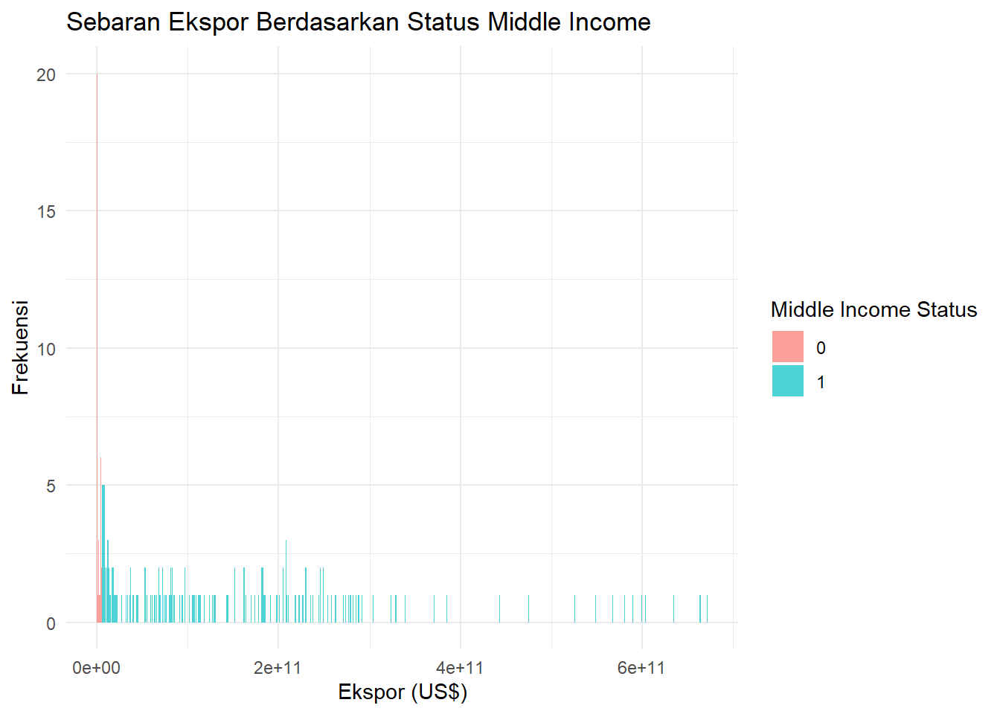
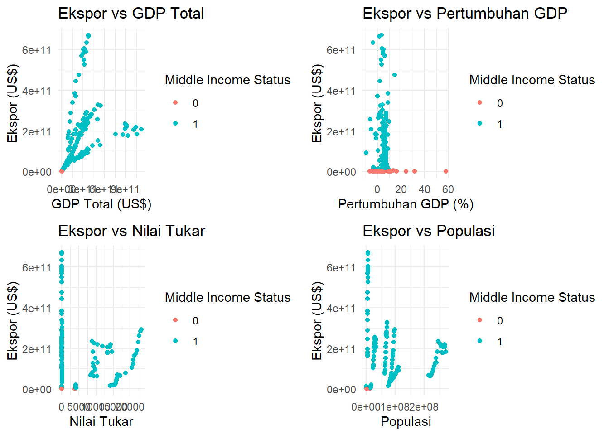
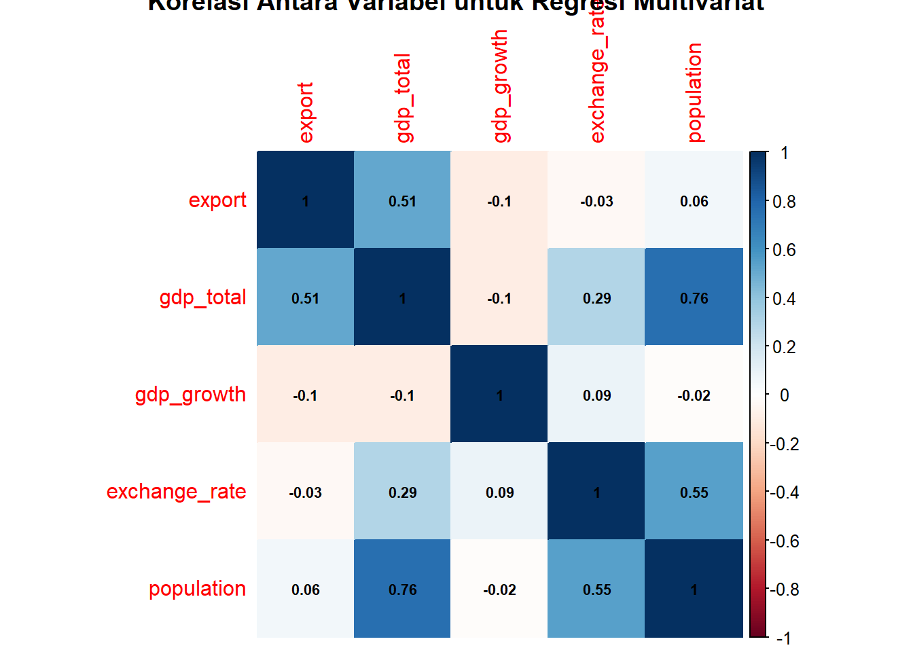
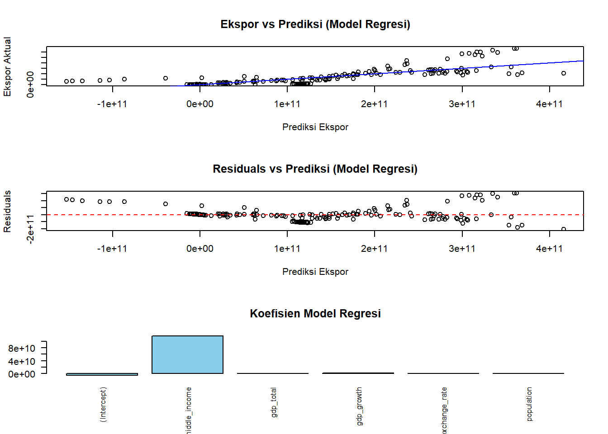
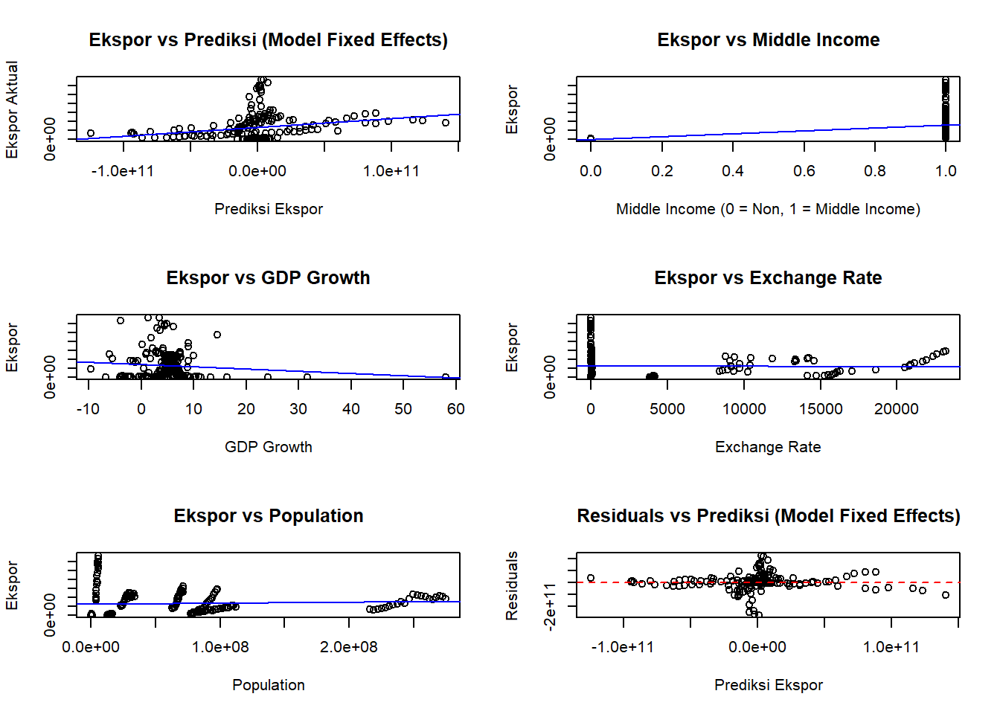

library(WDI) # Mengambil data World Bank
library(dplyr) # Manipulasi data
library(ggplot2) # Visualisasi data
library(plm) # Analisis data panel
library(kableExtra)# Pembuatan tabel
library(gridExtra) # Banyak Plot Sekaligus
library(corrplot) # Plot Correlation MatrixAnalisis Regresi Multivariat, dan Fixed Effects terhadap Faktor-Faktor yang Mempengaruhi Ekspor di Negara ASEAN
Metode Penelitian Politeknik APP Jakarta

1 Pendahuluan
1.1 Latar belakang
Negara-negara di kawasan ASEAN memiliki peran strategis dalam perekonomian global sebagai salah satu kawasan dengan pertumbuhan ekonomi tercepat. Sebagai blok perdagangan, ASEAN memiliki keunggulan kompetitif dalam berbagai sektor seperti manufaktur, pertanian, dan jasa. Namun, performa ekspor antarnegara ASEAN menunjukkan variasi yang signifikan, dipengaruhi oleh faktor-faktor ekonomi seperti total Produk Domestik Bruto (GDP), pertumbuhan ekonomi, nilai tukar, dan populasi. Dalam era globalisasi, pemahaman mendalam tentang faktor-faktor yang mendorong ekspor menjadi sangat penting bagi pengambil kebijakan untuk meningkatkan daya saing internasional.
Penelitian ini menggunakan pendekatan regresi sederhana, multivariat, dan fixed effects untuk menganalisis pengaruh variabel-variabel ekonomi terhadap ekspor di negara-negara ASEAN. Regresi sederhana digunakan untuk memahami hubungan langsung antara status middle income dan ekspor. Regresi multivariat digunakan untuk mengevaluasi pengaruh faktor-faktor tambahan seperti pertumbuhan GDP, nilai tukar, dan populasi. Sementara itu, model fixed effects diterapkan untuk menangkap efek khusus tiap negara yang tidak terukur secara langsung. Dengan pendekatan ini, penelitian bertujuan untuk memberikan gambaran yang komprehensif mengenai determinan ekspor di ASEAN dan implikasinya terhadap kebijakan ekonomi.
1.2 Ruang lingkup
Ruang Lingkup Penelitian
Penelitian ini difokuskan pada analisis faktor-faktor ekonomi yang memengaruhi ekspor di negara-negara ASEAN. Adapun ruang lingkup penelitian ini meliputi:
Kawasan dan Subjek Penelitian:
Kawasan yang dianalisis adalah negara-negara anggota ASEAN, meliputi Indonesia, Malaysia, Filipina, Singapura, Thailand, Vietnam, Brunei Darussalam, Kamboja, dan Timor Leste.
Subjek penelitian mencakup data ekonomi makro negara-negara tersebut, khususnya yang berkaitan dengan ekspor.
Periode Waktu:
- Penelitian ini menggunakan data tahunan dari tahun 2000 hingga 2020 untuk menangkap dinamika jangka panjang dalam performa ekspor.
Variabel Penelitian:
Variabel Dependen: Nilai ekspor (dalam US$).
Variabel Independen: GDP Total, pertumbuhan GDP, nilai tukar, dan populasi.
Variabel Dummy: Status middle income berdasarkan threshold GDP Total.
Sumber Data:
- Data yang digunakan berasal dari World Bank melalui paket
WDIdi R Studio, mencakup indikator ekonomi seperti nilai ekspor, GDP Total, pertumbuhan GDP, nilai tukar, dan populasi.
- Data yang digunakan berasal dari World Bank melalui paket
1.3 Rumusan masalah
Berdasarkan analisis regresi yang akan dilakukan,rumusan masalah penelitian adalah sebagai berikut:
Bagaimana pengaruh status middle income terhadap nilai ekspor di negara-negara ASEAN?
Faktor-faktor ekonomi apa saja, seperti GDP Total, pertumbuhan GDP, nilai tukar, dan populasi, yang secara signifikan memengaruhi ekspor di negara-negara ASEAN?
Sejauh mana variabel ekonomi memberikan kontribusi yang berbeda pada nilai ekspor antarnegara di kawasan ASEAN?
Apakah terdapat efek khusus yang unik di setiap negara ASEAN yang memengaruhi hubungan antara faktor ekonomi dan nilai ekspor?
Bagaimana performa model regresi multivariat, dan fixed effects dalam menganalisis determinan ekspor di ASEAN?
1.4 Tujuan dan manfaat penelitian
Berdasarkan latar belakang penelitian, kawasan ASEAN memiliki peran penting dalam perekonomian global dengan kontribusi ekspor yang signifikan. Namun, variasi kinerja ekspor antarnegara ASEAN menunjukkan adanya pengaruh dari berbagai faktor ekonomi, seperti GDP Total, pertumbuhan GDP, nilai tukar, dan populasi. Untuk memahami hubungan ini secara mendalam, penelitian ini bertujuan menganalisis pengaruh faktor-faktor tersebut terhadap ekspor di negara-negara ASEAN dengan pendekatan regresi sederhana, multivariat, dan fixed effects.
Diharapkan, hasil penelitian ini tidak hanya memberikan kontribusi teoretis bagi literatur ekonomi internasional, tetapi juga memberikan rekomendasi praktis bagi pembuat kebijakan dan pelaku usaha dalam meningkatkan daya saing ekspor negara-negara ASEAN.
Manfaat lain:
Memberikan kontribusi pada pengembangan literatur ekonomi internasional, khususnya terkait hubungan antara faktor-faktor ekonomi makro dan ekspor di kawasan ASEAN.
Menunjukkan efektivitas pendekatan regresi multivariat, dan fixed effects dalam menganalisis data lintas negara dan waktu (panel data).
Memberikan rekomendasi kebijakan untuk meningkatkan ekspor di negara-negara ASEAN berdasarkan determinan ekonomi yang signifikan.
Memberikan gambaran tentang pengaruh variabel ekonomi tertentu terhadap potensi ekspor, sehingga pelaku usaha dapat merancang strategi bisnis yang lebih baik.
1.5 Package
Packages yang digunakan antara lain sebagai berikut:
2 Studi pustaka
Ekspor dan Faktor Ekonomi Makro
Ekspor merupakan salah satu pendorong utama pertumbuhan ekonomi, terutama di kawasan ASEAN yang memiliki peran strategis dalam perdagangan global. Penelitian sebelumnya menunjukkan bahwa GDP, nilai tukar, dan populasi secara signifikan memengaruhi performa ekspor suatu negara. Penelitian oleh Wardatul Luthfiyana (2020) menemukan bahwa Foreign Direct Investment (FDI), inflasi, GDP, dan nilai tukar memberikan pengaruh signifikan terhadap kinerja ekspor di ASEAN 5, yaitu Indonesia, Malaysia, Singapura, Thailand, dan Filipina. Temuan ini konsisten dengan studi oleh Anita Yulistina (2018), yang menunjukkan bahwa GDP berkontribusi besar terhadap kinerja ekspor Indonesia dalam hubungan dagang dengan negara-negara ASEAN dan mitra dagang utama lainnya.
Peran GDP dalam Perdagangan Internasional
GDP merupakan indikator utama dalam menganalisis kekuatan ekonomi sebuah negara. Penelitian Budi Santoso (2017) menemukan bahwa GDP Total berpengaruh positif terhadap ekspor di ASEAN. Studi ini juga menyoroti perbedaan efek variabel ekonomi makro terhadap negara dengan status middle income dibandingkan negara berpenghasilan tinggi. Penelitian lain oleh Ibrahim dkk. (2020) menggunakan pendekatan model gravitasi dan membuktikan bahwa GDP, ukuran populasi, dan jarak ekonomi merupakan determinan utama dalam perdagangan internasional.
Nilai Tukar dan Ekspor
Nilai tukar memainkan peran penting dalam menentukan daya saing harga barang di pasar internasional. Penelitian oleh Rizki Permana (2018) menunjukkan bahwa perubahan nilai tukar memiliki dampak signifikan terhadap ekspor negara-negara ASEAN dalam jangka pendek, meskipun dampaknya berbeda di setiap negara. Studi ini menegaskan pentingnya stabilitas nilai tukar untuk meningkatkan daya saing ekspor.
Metode Analisis: Regresi dan Fixed Effects
Penggunaan pendekatan regresi sederhana, multivariat, dan fixed effects menjadi populer dalam penelitian perdagangan internasional. Studi oleh Febriani dkk. (2021) memanfaatkan data panel dinamis untuk menganalisis determinan ekspor di negara-negara ASEAN, yang mencakup variabel makroekonomi seperti GDP Total, pertumbuhan GDP, nilai tukar, dan populasi. Penelitian ini menekankan pentingnya pendekatan fixed effects untuk menangkap karakteristik khusus tiap negara, sehingga menghasilkan analisis yang lebih akurat.
Konteks ASEAN dalam Perdagangan
ASEAN sebagai blok perdagangan telah memperkuat integrasi ekonominya melalui kerja sama regional, seperti ASEAN Free Trade Area (AFTA). Studi oleh Wijaya dkk. (2022) menunjukkan bahwa status keanggotaan ASEAN memberikan pengaruh positif terhadap peningkatan ekspor negara-negara anggota dibandingkan non-anggota. Penelitian ini menyoroti pentingnya perjanjian perdagangan regional dalam meningkatkan perdagangan lintas batas.
3 Metode penelitian
3.1 Data
Data yang digunakan dalam penelitian berikut berasal dari World Bank mencakup indikator ekonomi seperti nilai ekspor, GDP Total, pertumbuhan GDP, nilai tukar, dan populasi.
# ============================================
# 2. Download Data World Bank (WDI)
# ============================================
# Unduh data untuk negara ASEAN dengan variabel GDP Total
data <- WDI(country = c("ID", "MY", "PH", "SG", "TH", "VN", "BN", "KH", "TL"),
indicator = c("NE.EXP.GNFS.CD", # Export (current US$)
"NY.GDP.MKTP.CD", # GDP Total (current US$)
"NY.GDP.MKTP.KD.ZG",# GDP growth (annual %)
"PA.NUS.FCRF", # Exchange rate
"SP.POP.TOTL"), # Population
start = 2000,
end = 2020)
# Ubah nama kolom agar lebih deskriptif
colnames(data) <- c( "country","iso2c", "iso3c", "year", "export", "gdp_total",
"gdp_growth", "exchange_rate", "population")
# ============================================
# 3. Membersihkan Data
# ============================================
# Hapus nilai kosong di kolom penting
data_clean <- data %>%
filter(!is.na(gdp_total) & !is.na(export) &
!is.na(gdp_growth) & !is.na(exchange_rate) &
!is.na(population))
# ============================================
# 4. Tambahkan Variabel Dummy
# ============================================
# Tambahkan dummy untuk middle income berdasarkan GDP Total
data_clean <- data_clean %>%
mutate(middle_income = ifelse(gdp_total >= 1e10 & gdp_total <= 5e12, 1, 0))
# ============================================
# 5. Eksplorasi Data
# ============================================
# Statistik Deskriptif
summary(data_clean) country iso2c iso3c year
Length:189 Length:189 Length:189 Min. :2000
Class :character Class :character Class :character 1st Qu.:2005
Mode :character Mode :character Mode :character Median :2010
Mean :2010
3rd Qu.:2015
Max. :2020
export gdp_total gdp_growth exchange_rate
Min. :3.295e+07 Min. :3.669e+08 Min. :-9.518 Min. : 1.000
1st Qu.:8.004e+09 1st Qu.:1.381e+10 1st Qu.: 3.134 1st Qu.: 1.507
Median :8.145e+10 Median :1.435e+11 Median : 5.087 Median : 34.248
Mean :1.329e+11 Mean :2.038e+11 Mean : 5.104 Mean : 3738.732
3rd Qu.:2.081e+11 3rd Qu.:3.080e+11 3rd Qu.: 6.899 3rd Qu.: 4067.750
Max. :6.717e+11 Max. :1.119e+12 Max. :58.078 Max. :23208.368
population middle_income
Min. : 326424 Min. :0.0000
1st Qu.: 4265762 1st Qu.:1.0000
Median : 28655776 Median :1.0000
Mean : 60833591 Mean :0.8254
3rd Qu.: 87455152 3rd Qu.:1.0000
Max. :274814866 Max. :1.0000 # Distribusi middle income di negara ASEAN
table(data_clean$middle_income)
0 1
33 156 # Cetak tabel dengan kable
data_clean %>%
kable("html", caption = "Data Clean") %>%
kable_styling(bootstrap_options = c("striped", "hover", "condensed", "responsive", "bordered"))| country | iso2c | iso3c | year | export | gdp_total | gdp_growth | exchange_rate | population | middle_income |
|---|---|---|---|---|---|---|---|---|---|
| Brunei Darussalam | BN | BRN | 2000 | 3743517657 | 6.570999e+09 | 3.4746763 | 1.723963 | 326424 | 0 |
| Brunei Darussalam | BN | BRN | 2001 | 3531476932 | 6.096156e+09 | 1.4660605 | 1.791723 | 333345 | 0 |
| Brunei Darussalam | BN | BRN | 2002 | 3588069777 | 6.333083e+09 | 3.9614391 | 1.790588 | 340099 | 0 |
| Brunei Darussalam | BN | BRN | 2003 | 4187448771 | 7.167725e+09 | 3.5834289 | 1.742183 | 346637 | 0 |
| Brunei Darussalam | BN | BRN | 2004 | 4978970783 | 8.619179e+09 | 0.1045384 | 1.690228 | 352911 | 0 |
| Brunei Darussalam | BN | BRN | 2005 | 6177687105 | 1.054720e+10 | -0.0039252 | 1.664397 | 358916 | 1 |
| Brunei Darussalam | BN | BRN | 2006 | 7607073525 | 1.264462e+10 | 4.0984126 | 1.588933 | 364663 | 1 |
| Brunei Darussalam | BN | BRN | 2007 | 7651436605 | 1.343203e+10 | -3.7636235 | 1.507102 | 370873 | 1 |
| Brunei Darussalam | BN | BRN | 2008 | 10502405644 | 1.592646e+10 | -3.9007108 | 1.417167 | 377793 | 1 |
| Brunei Darussalam | BN | BRN | 2009 | 7112433474 | 1.191290e+10 | -1.9002539 | 1.454569 | 384952 | 1 |
| Brunei Darussalam | BN | BRN | 2010 | 9239730724 | 1.370712e+10 | 2.7413643 | 1.363509 | 392332 | 1 |
| Brunei Darussalam | BN | BRN | 2011 | 12875904772 | 1.852479e+10 | 3.7444064 | 1.257913 | 399389 | 1 |
| Brunei Darussalam | BN | BRN | 2012 | 13364336606 | 1.904844e+10 | 0.9131353 | 1.249567 | 405557 | 1 |
| Brunei Darussalam | BN | BRN | 2013 | 12312003443 | 1.809415e+10 | -2.1247832 | 1.251166 | 411202 | 1 |
| Brunei Darussalam | BN | BRN | 2014 | 11656782738 | 1.709780e+10 | -2.5078872 | 1.267040 | 416750 | 1 |
| Brunei Darussalam | BN | BRN | 2015 | 6751297357 | 1.293030e+10 | -0.3923835 | 1.374911 | 422212 | 1 |
| Brunei Darussalam | BN | BRN | 2016 | 5651998492 | 1.140027e+10 | -2.4779178 | 1.381347 | 427564 | 1 |
| Brunei Darussalam | BN | BRN | 2017 | 6012333908 | 1.212817e+10 | 1.3287265 | 1.380891 | 432772 | 1 |
| Brunei Darussalam | BN | BRN | 2018 | 7045735093 | 1.356691e+10 | 0.0523711 | 1.348919 | 437810 | 1 |
| Brunei Darussalam | BN | BRN | 2019 | 7804888564 | 1.346924e+10 | 3.8688442 | 1.364219 | 442680 | 1 |
| Brunei Darussalam | BN | BRN | 2020 | 6886059829 | 1.200580e+10 | 1.1335734 | 1.379703 | 447404 | 1 |
| Cambodia | KH | KHM | 2000 | 1821406331 | 3.694169e+09 | 9.9935803 | 3840.750000 | 12462336 | 0 |
| Cambodia | KH | KHM | 2001 | 2121742524 | 4.145666e+09 | 7.3897107 | 3916.333333 | 12658484 | 0 |
| Cambodia | KH | KHM | 2002 | 2439168009 | 4.501228e+09 | 6.2650728 | 3912.083333 | 12855241 | 0 |
| Cambodia | KH | KHM | 2003 | 2736752435 | 5.046693e+09 | 10.2836813 | 3973.333333 | 13050968 | 0 |
| Cambodia | KH | KHM | 2004 | 3578124692 | 5.883297e+09 | 9.4576948 | 4016.250000 | 13244731 | 0 |
| Cambodia | KH | KHM | 2005 | 4313261451 | 7.066296e+09 | 13.3033338 | 4092.500000 | 13439202 | 0 |
| Cambodia | KH | KHM | 2006 | 5400482920 | 8.350531e+09 | 10.9433601 | 4103.250000 | 13639028 | 0 |
| Cambodia | KH | KHM | 2007 | 6191862457 | 1.012792e+10 | 10.3984581 | 4056.166667 | 13841770 | 1 |
| Cambodia | KH | KHM | 2008 | 7521137176 | 1.217430e+10 | 7.4763661 | 4054.166667 | 14053479 | 1 |
| Cambodia | KH | KHM | 2009 | 5777715035 | 1.250290e+10 | 4.0747785 | 4139.333333 | 14276810 | 1 |
| Cambodia | KH | KHM | 2010 | 6935619207 | 1.380867e+10 | 5.0769184 | 4184.916667 | 14500726 | 1 |
| Cambodia | KH | KHM | 2011 | 8003673661 | 1.603262e+10 | 7.2866581 | 4058.500000 | 14722584 | 1 |
| Cambodia | KH | KHM | 2012 | 9498870542 | 1.782654e+10 | 7.6502566 | 4033.000000 | 14945085 | 1 |
| Cambodia | KH | KHM | 2013 | 11214912044 | 1.980714e+10 | 7.8574998 | 4027.250000 | 15170208 | 1 |
| Cambodia | KH | KHM | 2014 | 12481981424 | 2.204146e+10 | 8.0003207 | 4037.500000 | 15396772 | 1 |
| Cambodia | KH | KHM | 2015 | 13532995573 | 2.417417e+10 | 7.2070347 | 4067.750000 | 15623251 | 1 |
| Cambodia | KH | KHM | 2016 | 14986346465 | 2.655655e+10 | 7.9055012 | 4058.694579 | 15852803 | 1 |
| Cambodia | KH | KHM | 2017 | 16527255663 | 2.935567e+10 | 8.0750392 | 4050.579986 | 16073372 | 1 |
| Cambodia | KH | KHM | 2018 | 18386489552 | 3.314589e+10 | 8.7762238 | 4051.166900 | 16274522 | 1 |
| Cambodia | KH | KHM | 2019 | 20340881133 | 3.668536e+10 | 7.9369501 | 4061.148963 | 16481304 | 1 |
| Cambodia | KH | KHM | 2020 | 20863615890 | 3.481807e+10 | -3.5557219 | 4092.783219 | 16725474 | 1 |
| Indonesia | ID | IDN | 2000 | 67621169166 | 1.650210e+11 | 4.9200677 | 8421.775000 | 216077790 | 1 |
| Indonesia | ID | IDN | 2001 | 62625875834 | 1.604469e+11 | 3.6434664 | 10260.850000 | 219097902 | 1 |
| Indonesia | ID | IDN | 2002 | 63956798805 | 1.956606e+11 | 4.4994754 | 9311.191667 | 222088495 | 1 |
| Indonesia | ID | IDN | 2003 | 71553141045 | 2.347725e+11 | 4.7803691 | 8577.133333 | 225048008 | 1 |
| Indonesia | ID | IDN | 2004 | 82744351781 | 2.568369e+11 | 5.0308739 | 8938.850000 | 227926649 | 1 |
| Indonesia | ID | IDN | 2005 | 97387627566 | 2.858686e+11 | 5.6925713 | 9704.741667 | 230871650 | 1 |
| Indonesia | ID | IDN | 2006 | 113143425288 | 3.645705e+11 | 5.5009518 | 9159.316667 | 233951652 | 1 |
| Indonesia | ID | IDN | 2007 | 127226102177 | 4.322167e+11 | 6.3450222 | 9141.000000 | 237062337 | 1 |
| Indonesia | ID | IDN | 2008 | 152090401422 | 5.102286e+11 | 6.0137036 | 9698.962500 | 240157903 | 1 |
| Indonesia | ID | IDN | 2009 | 130357798591 | 5.395801e+11 | 4.6288712 | 10389.937500 | 243220028 | 1 |
| Indonesia | ID | IDN | 2010 | 183480562955 | 7.550942e+11 | 6.2238542 | 9090.433333 | 246305322 | 1 |
| Indonesia | ID | IDN | 2011 | 235095129124 | 8.929691e+11 | 6.1697842 | 8770.433333 | 249470032 | 1 |
| Indonesia | ID | IDN | 2012 | 225744403276 | 9.178699e+11 | 6.0300507 | 9386.629167 | 252698525 | 1 |
| Indonesia | ID | IDN | 2013 | 218308408828 | 9.125241e+11 | 5.5572637 | 10461.240000 | 255852467 | 1 |
| Indonesia | ID | IDN | 2014 | 210820082826 | 8.908148e+11 | 5.0066684 | 11865.211296 | 258877399 | 1 |
| Indonesia | ID | IDN | 2015 | 182158298809 | 8.608542e+11 | 4.8763223 | 13389.412937 | 261799249 | 1 |
| Indonesia | ID | IDN | 2016 | 177886012744 | 9.318774e+11 | 5.0330692 | 13308.326802 | 264627418 | 1 |
| Indonesia | ID | IDN | 2017 | 204924485911 | 1.015619e+12 | 5.0697859 | 13380.833879 | 267346658 | 1 |
| Indonesia | ID | IDN | 2018 | 218905647879 | 1.042272e+12 | 5.1742915 | 14236.938774 | 269951846 | 1 |
| Indonesia | ID | IDN | 2019 | 208057763666 | 1.119100e+12 | 5.0192877 | 14147.671361 | 272489381 | 1 |
| Indonesia | ID | IDN | 2020 | 183546577020 | 1.059055e+12 | -2.0655118 | 14582.203468 | 274814866 | 1 |
| Malaysia | MY | MYS | 2000 | 112369210526 | 9.378974e+10 | 8.8588682 | 3.800000 | 22967816 | 1 |
| Malaysia | MY | MYS | 2001 | 102435789474 | 9.278395e+10 | 0.5176753 | 3.800000 | 23526538 | 1 |
| Malaysia | MY | MYS | 2002 | 109221052632 | 1.008455e+11 | 5.3909883 | 3.800000 | 24102477 | 1 |
| Malaysia | MY | MYS | 2003 | 117854210526 | 1.102024e+11 | 5.7884993 | 3.800000 | 24679602 | 1 |
| Malaysia | MY | MYS | 2004 | 143927631579 | 1.247495e+11 | 6.7834377 | 3.800000 | 25256772 | 1 |
| Malaysia | MY | MYS | 2005 | 162048875496 | 1.435344e+11 | 5.3321392 | 3.787092 | 25836071 | 1 |
| Malaysia | MY | MYS | 2006 | 182517092278 | 1.626923e+11 | 5.5848471 | 3.668177 | 26417909 | 1 |
| Malaysia | MY | MYS | 2007 | 205488238927 | 1.935496e+11 | 6.2987859 | 3.437569 | 26998389 | 1 |
| Malaysia | MY | MYS | 2008 | 229656580530 | 2.308116e+11 | 4.8317699 | 3.335833 | 27570059 | 1 |
| Malaysia | MY | MYS | 2009 | 184897274878 | 2.022575e+11 | -1.5135287 | 3.524503 | 28124778 | 1 |
| Malaysia | MY | MYS | 2010 | 221687585588 | 2.550176e+11 | 7.4248474 | 3.221087 | 28655776 | 1 |
| Malaysia | MY | MYS | 2011 | 254020012399 | 2.979517e+11 | 5.2939128 | 3.060003 | 29162039 | 1 |
| Malaysia | MY | MYS | 2012 | 249353066125 | 3.144430e+11 | 5.4734542 | 3.088801 | 29662831 | 1 |
| Malaysia | MY | MYS | 2013 | 244490716806 | 3.232762e+11 | 4.6937225 | 3.150909 | 30174265 | 1 |
| Malaysia | MY | MYS | 2014 | 249470799240 | 3.380661e+11 | 6.0067219 | 3.272860 | 30696137 | 1 |
| Malaysia | MY | MYS | 2015 | 209287287857 | 3.013553e+11 | 5.0915324 | 3.905500 | 31232798 | 1 |
| Malaysia | MY | MYS | 2016 | 201165058575 | 3.012560e+11 | 4.4497814 | 4.148301 | 31789685 | 1 |
| Malaysia | MY | MYS | 2017 | 223413837325 | 3.191091e+11 | 5.8127224 | 4.300441 | 32355644 | 1 |
| Malaysia | MY | MYS | 2018 | 245967590635 | 3.587888e+11 | 4.8430870 | 4.035130 | 32910967 | 1 |
| Malaysia | MY | MYS | 2019 | 238379861290 | 3.651777e+11 | 4.4131874 | 4.142470 | 33440596 | 1 |
| Malaysia | MY | MYS | 2020 | 207798540353 | 3.374562e+11 | -5.4568466 | 4.203482 | 33889558 | 1 |
| Philippines | PH | PHL | 2000 | 36266016498 | 8.366979e+10 | 4.3825048 | 44.192250 | 79625397 | 1 |
| Philippines | PH | PHL | 2001 | 32480429837 | 7.892123e+10 | 3.0492315 | 50.992650 | 81401488 | 1 |
| Philippines | PH | PHL | 2002 | 33727726965 | 8.430735e+10 | 3.7162550 | 51.603567 | 83068889 | 1 |
| Philippines | PH | PHL | 2003 | 36821904273 | 8.703909e+10 | 5.0869111 | 54.203333 | 84731835 | 1 |
| Philippines | PH | PHL | 2004 | 39736335346 | 9.500200e+10 | 6.5692285 | 56.039917 | 86394504 | 1 |
| Philippines | PH | PHL | 2005 | 44289298774 | 1.074200e+11 | 4.9425051 | 55.085492 | 88015962 | 1 |
| Philippines | PH | PHL | 2006 | 52651035880 | 1.276529e+11 | 5.3164168 | 51.314273 | 89508986 | 1 |
| Philippines | PH | PHL | 2007 | 59294683204 | 1.559804e+11 | 6.5192916 | 46.148391 | 91075184 | 1 |
| Philippines | PH | PHL | 2008 | 60584223734 | 1.816246e+11 | 4.3444873 | 44.323288 | 92699095 | 1 |
| Philippines | PH | PHL | 2009 | 53178736402 | 1.759748e+11 | 1.4483231 | 47.679688 | 94384250 | 1 |
| Philippines | PH | PHL | 2010 | 68500918812 | 2.083689e+11 | 7.3345000 | 45.109664 | 96337125 | 1 |
| Philippines | PH | PHL | 2011 | 68169783856 | 2.342167e+11 | 3.8582328 | 43.313137 | 98248614 | 1 |
| Philippines | PH | PHL | 2012 | 71941908435 | 2.619205e+11 | 6.8969517 | 42.228795 | 100175512 | 1 |
| Philippines | PH | PHL | 2013 | 74318435289 | 2.839028e+11 | 6.7505313 | 42.446185 | 102076336 | 1 |
| Philippines | PH | PHL | 2014 | 81375151612 | 2.974836e+11 | 6.3479875 | 44.395154 | 103767130 | 1 |
| Philippines | PH | PHL | 2015 | 83377968054 | 3.064459e+11 | 6.3483097 | 45.502840 | 105312992 | 1 |
| Philippines | PH | PHL | 2016 | 84987391168 | 3.186270e+11 | 7.1494568 | 47.492464 | 106735719 | 1 |
| Philippines | PH | PHL | 2017 | 97073582742 | 3.284807e+11 | 6.9309883 | 50.403720 | 108119693 | 1 |
| Philippines | PH | PHL | 2018 | 104793441904 | 3.468419e+11 | 6.3414856 | 52.661430 | 109465287 | 1 |
| Philippines | PH | PHL | 2019 | 106953484846 | 3.768234e+11 | 6.1185257 | 51.795783 | 110804683 | 1 |
| Philippines | PH | PHL | 2020 | 91171559891 | 3.617511e+11 | -9.5182947 | 49.624096 | 112081264 | 1 |
| Singapore | SG | SGP | 2000 | 180961018305 | 9.607654e+10 | 9.0383163 | 1.723963 | 4027887 | 1 |
| Singapore | SG | SGP | 2001 | 164227617774 | 8.979379e+10 | -1.0708628 | 1.791723 | 4138012 | 1 |
| Singapore | SG | SGP | 2002 | 170350298338 | 9.253837e+10 | 3.9233608 | 1.790588 | 4175950 | 1 |
| Singapore | SG | SGP | 2003 | 197818139656 | 9.764640e+10 | 4.5482554 | 1.742183 | 4114826 | 1 |
| Singapore | SG | SGP | 2004 | 246116322768 | 1.150336e+11 | 9.9399827 | 1.690228 | 4166664 | 1 |
| Singapore | SG | SGP | 2005 | 287771727539 | 1.278078e+11 | 7.3663224 | 1.664397 | 4265762 | 1 |
| Singapore | SG | SGP | 2006 | 338926122121 | 1.486273e+11 | 9.0067661 | 1.588933 | 4401365 | 1 |
| Singapore | SG | SGP | 2007 | 385006655157 | 1.809417e+11 | 9.0215195 | 1.507102 | 4588599 | 1 |
| Singapore | SG | SGP | 2008 | 443371610356 | 1.936173e+11 | 1.8634835 | 1.414861 | 4839396 | 1 |
| Singapore | SG | SGP | 2009 | 370525982888 | 1.941503e+11 | 0.1279534 | 1.454515 | 4987573 | 1 |
| Singapore | SG | SGP | 2010 | 474817309469 | 2.398080e+11 | 14.5197497 | 1.363508 | 5076732 | 1 |
| Singapore | SG | SGP | 2011 | 568009168564 | 2.793565e+11 | 6.2149342 | 1.257776 | 5183688 | 1 |
| Singapore | SG | SGP | 2012 | 580505587048 | 2.950929e+11 | 4.4354976 | 1.249676 | 5312437 | 1 |
| Singapore | SG | SGP | 2013 | 600013186286 | 3.075764e+11 | 4.8176310 | 1.251300 | 5399162 | 1 |
| Singapore | SG | SGP | 2014 | 604391776173 | 3.148636e+11 | 3.9355403 | 1.267050 | 5469724 | 1 |
| Singapore | SG | SGP | 2015 | 549421999164 | 3.079985e+11 | 2.9767993 | 1.374825 | 5535002 | 1 |
| Singapore | SG | SGP | 2016 | 525530384077 | 3.190539e+11 | 3.5886437 | 1.381546 | 5607283 | 1 |
| Singapore | SG | SGP | 2017 | 589858681681 | 3.432572e+11 | 4.5129263 | 1.380925 | 5612253 | 1 |
| Singapore | SG | SGP | 2018 | 671737757276 | 3.768927e+11 | 3.5171142 | 1.348842 | 5638676 | 1 |
| Singapore | SG | SGP | 2019 | 664477941705 | 3.769016e+11 | 1.3450587 | 1.364158 | 5703569 | 1 |
| Singapore | SG | SGP | 2020 | 634513916370 | 3.494884e+11 | -3.8697989 | 1.379742 | 5685807 | 1 |
| Thailand | TH | THA | 2000 | 81953035120 | 1.263922e+11 | 4.4552470 | 40.111803 | 63007815 | 1 |
| Thailand | TH | THA | 2001 | 76088350937 | 1.202965e+11 | 3.4442490 | 44.431900 | 63651141 | 1 |
| Thailand | TH | THA | 2002 | 81447794223 | 1.343009e+11 | 6.1490361 | 42.960083 | 64266437 | 1 |
| Thailand | TH | THA | 2003 | 93686920142 | 1.522806e+11 | 7.1892433 | 41.484617 | 64868166 | 1 |
| Thailand | TH | THA | 2004 | 114062494756 | 1.728957e+11 | 6.2893421 | 40.222415 | 65452047 | 1 |
| Thailand | TH | THA | 2005 | 129498934986 | 1.893184e+11 | 4.1876384 | 40.220130 | 66017420 | 1 |
| Thailand | TH | THA | 2006 | 152293268280 | 2.217583e+11 | 4.9678109 | 37.881983 | 66567687 | 1 |
| Thailand | TH | THA | 2007 | 181094565788 | 2.629426e+11 | 5.4351517 | 34.518181 | 67102394 | 1 |
| Thailand | TH | THA | 2008 | 208095289026 | 2.913830e+11 | 1.7256988 | 33.313301 | 67619830 | 1 |
| Thailand | TH | THA | 2009 | 181530421335 | 2.817106e+11 | -0.6906182 | 34.285774 | 68121080 | 1 |
| Thailand | TH | THA | 2010 | 226787505596 | 3.411048e+11 | 7.5133905 | 31.685705 | 68579447 | 1 |
| Thailand | TH | THA | 2011 | 262743281925 | 3.708187e+11 | 0.8401321 | 30.491733 | 69007208 | 1 |
| Thailand | TH | THA | 2012 | 274121377629 | 3.975583e+11 | 7.2427962 | 31.083092 | 69436098 | 1 |
| Thailand | TH | THA | 2013 | 282342912104 | 4.203337e+11 | 2.6874956 | 30.725967 | 69845114 | 1 |
| Thailand | TH | THA | 2014 | 278596013717 | 4.073390e+11 | 0.9844689 | 32.479833 | 70216367 | 1 |
| Thailand | TH | THA | 2015 | 271423493718 | 4.012962e+11 | 3.1340472 | 34.247717 | 70540795 | 1 |
| Thailand | TH | THA | 2016 | 277248464807 | 4.133663e+11 | 3.4351577 | 35.296383 | 70859841 | 1 |
| Thailand | TH | THA | 2017 | 304266013738 | 4.563568e+11 | 4.1776810 | 33.939811 | 71160187 | 1 |
| Thailand | TH | THA | 2018 | 328569784687 | 5.067542e+11 | 4.2228703 | 32.310226 | 71376079 | 1 |
| Thailand | TH | THA | 2019 | 323768892197 | 5.439767e+11 | 2.1145578 | 31.047606 | 71522271 | 1 |
| Thailand | TH | THA | 2020 | 257709985018 | 5.004619e+11 | -6.0500385 | 31.293673 | 71641484 | 1 |
| Timor-Leste | TL | TLS | 2000 | 38960300 | 3.669243e+08 | 58.0780959 | 1.000000 | 745088 | 0 |
| Timor-Leste | TL | TLS | 2001 | 42828900 | 4.774435e+08 | 16.3513809 | 1.000000 | 812249 | 0 |
| Timor-Leste | TL | TLS | 2002 | 36638400 | 4.694555e+08 | -6.7036518 | 1.000000 | 879159 | 0 |
| Timor-Leste | TL | TLS | 2003 | 33673900 | 4.904391e+08 | -2.1822641 | 1.000000 | 916878 | 0 |
| Timor-Leste | TL | TLS | 2004 | 32945200 | 4.407720e+08 | 0.4000040 | 1.000000 | 929074 | 0 |
| Timor-Leste | TL | TLS | 2005 | 32989600 | 4.622680e+08 | 2.9845796 | 1.000000 | 948311 | 0 |
| Timor-Leste | TL | TLS | 2006 | 41881900 | 4.537924e+08 | -4.1160927 | 1.000000 | 976597 | 0 |
| Timor-Leste | TL | TLS | 2007 | 54263000 | 5.427954e+08 | 10.2653885 | 1.000000 | 1004889 | 0 |
| Timor-Leste | TL | TLS | 2008 | 60613700 | 6.485236e+08 | 11.3948048 | 1.000000 | 1032429 | 0 |
| Timor-Leste | TL | TLS | 2009 | 66633500 | 7.269378e+08 | 10.1469544 | 1.000000 | 1058782 | 0 |
| Timor-Leste | TL | TLS | 2010 | 75532300 | 8.819093e+08 | 9.3315118 | 1.000000 | 1084679 | 0 |
| Timor-Leste | TL | TLS | 2011 | 66782600 | 1.042535e+09 | 5.9585397 | 1.000000 | 1110207 | 0 |
| Timor-Leste | TL | TLS | 2012 | 82664300 | 1.160555e+09 | 4.8606219 | 1.000000 | 1134885 | 0 |
| Timor-Leste | TL | TLS | 2013 | 77945700 | 1.395727e+09 | 3.1043668 | 1.000000 | 1158695 | 0 |
| Timor-Leste | TL | TLS | 2014 | 66178400 | 1.447535e+09 | 4.4724985 | 1.000000 | 1181903 | 0 |
| Timor-Leste | TL | TLS | 2015 | 48508500 | 1.590282e+09 | 2.4800404 | 1.000000 | 1205131 | 0 |
| Timor-Leste | TL | TLS | 2016 | 51780000 | 1.640465e+09 | 3.0099306 | 1.000000 | 1228312 | 0 |
| Timor-Leste | TL | TLS | 2017 | 38179900 | 1.584878e+09 | -3.1824152 | 1.000000 | 1251703 | 0 |
| Timor-Leste | TL | TLS | 2018 | 45614300 | 1.555989e+09 | -0.4665022 | 1.000000 | 1275959 | 0 |
| Timor-Leste | TL | TLS | 2019 | 431191700 | 2.032550e+09 | 24.2128840 | 1.000000 | 1300945 | 0 |
| Timor-Leste | TL | TLS | 2020 | 792950600 | 2.162619e+09 | 31.7257417 | 1.000000 | 1326053 | 0 |
| Viet Nam | VN | VNM | 2000 | 16808688578 | 3.117252e+10 | 6.7873164 | 14167.750000 | 77154011 | 1 |
| Viet Nam | VN | VNM | 2001 | 17997102361 | 3.268520e+10 | 6.1928933 | 14725.166667 | 77969361 | 1 |
| Viet Nam | VN | VNM | 2002 | 19193787587 | 3.506411e+10 | 6.3208210 | 15279.500000 | 78772224 | 1 |
| Viet Nam | VN | VNM | 2003 | 22415697836 | 3.955251e+10 | 6.8990635 | 15509.583333 | 79563777 | 1 |
| Viet Nam | VN | VNM | 2004 | 27134530700 | 4.542785e+10 | 7.5364106 | 15746.000000 | 80338971 | 1 |
| Viet Nam | VN | VNM | 2005 | 36712091515 | 5.763326e+10 | 7.5472477 | 15858.916667 | 81088313 | 1 |
| Viet Nam | VN | VNM | 2006 | 44944777029 | 6.637166e+10 | 6.9779548 | 15994.250000 | 82167897 | 1 |
| Viet Nam | VN | VNM | 2007 | 54591007521 | 7.741443e+10 | 7.1295045 | 16105.125000 | 83633375 | 1 |
| Viet Nam | VN | VNM | 2008 | 69724976614 | 9.913030e+10 | 5.6617712 | 16302.250000 | 85175788 | 1 |
| Viet Nam | VN | VNM | 2009 | 66374595301 | 1.060147e+11 | 5.3978975 | 17065.083333 | 86460018 | 1 |
| Viet Nam | VN | VNM | 2010 | 79747480853 | 1.472012e+11 | 6.4232448 | 18612.916667 | 87455152 | 1 |
| Viet Nam | VN | VNM | 2011 | 105593919858 | 1.725950e+11 | 6.4131689 | 20509.750000 | 88468314 | 1 |
| Viet Nam | VN | VNM | 2012 | 124149069364 | 1.955907e+11 | 5.5045447 | 20828.000000 | 89510356 | 1 |
| Viet Nam | VN | VNM | 2013 | 142758439316 | 2.137088e+11 | 5.5535108 | 20933.416667 | 90573104 | 1 |
| Viet Nam | VN | VNM | 2014 | 162478898406 | 2.334515e+11 | 6.4222431 | 21148.000000 | 91679578 | 1 |
| Viet Nam | VN | VNM | 2015 | 174473996313 | 2.392583e+11 | 6.9871543 | 21697.567500 | 92823254 | 1 |
| Viet Nam | VN | VNM | 2016 | 190526869545 | 2.570960e+11 | 6.6900089 | 21935.000833 | 94000117 | 1 |
| Viet Nam | VN | VNM | 2017 | 230041803530 | 2.813536e+11 | 6.9401904 | 22370.086667 | 95176977 | 1 |
| Viet Nam | VN | VNM | 2018 | 261802606599 | 3.101065e+11 | 7.4650069 | 22602.050000 | 96237319 | 1 |
| Viet Nam | VN | VNM | 2019 | 284737397483 | 3.343653e+11 | 7.3592627 | 23050.241667 | 97173776 | 1 |
| Viet Nam | VN | VNM | 2020 | 292479899129 | 3.466157e+11 | 2.8654132 | 23208.368333 | 98079191 | 1 |
Sumber data: World Bank.
Tabel data yang digunakan dalam penelitian ini mencakup data tahunan dari negara-negara ASEAN untuk periode 2000 hingga 2020. Data diambil dari World Bank melalui library WDI di R, mencakup indikator ekonomi makro yang relevan. Berikut adalah penjelasan setiap variabel yang terdapat dalam tabel:
iso3c: Kode ISO 3 huruf untuk setiap negara (contoh: IDN untuk Indonesia, MYS untuk Malaysia). Variabel ini digunakan sebagai identitas unik tiap negara dalam analisis data panel.
year: Tahun observasi, mencakup rentang dari 2000 hingga 2020. Variabel ini berfungsi untuk menganalisis tren data secara waktu.
export: Nilai ekspor dalam US Dollar (USD). Variabel ini merupakan variabel dependen dalam model regresi, yang dianalisis pengaruhnya terhadap variabel independen lainnya.
gdp_total: Produk Domestik Bruto (GDP) Total dalam USD. Variabel ini mencerminkan kekuatan ekonomi suatu negara dan digunakan sebagai salah satu variabel independen.
gdp_growth: Pertumbuhan GDP tahunan dalam persen (%). Variabel ini digunakan untuk menangkap dinamika ekonomi setiap negara dari waktu ke waktu.
exchange_rate: Nilai tukar mata uang domestik terhadap USD. Variabel ini memengaruhi daya saing harga barang ekspor di pasar internasional.
population: Jumlah populasi total dari setiap negara. Variabel ini digunakan untuk mencerminkan kapasitas pasar domestik dan tenaga kerja.
middle_income: Variabel dummy yang menunjukkan status pendapatan menengah suatu negara, dengan nilai:
0: Negara dengan pendapatan di luar kategori middle income. bisa dibawah income menengah maupun diatas menengah.
1: Negara dengan pendapatan dalam kategori middle income, berdasarkan threshold GDP Total tertentu.
3.2 Plot (Visualisasi Data)
# Histogram distribusi ekspor berdasarkan status middle income
ggplot(data_clean, aes(x = export, fill = factor(middle_income))) +
geom_histogram(binwidth = 1000000000, alpha = 0.7, position = "identity") +
labs(title = "Sebaran Ekspor Berdasarkan Status Middle Income",
x = "Ekspor (US$)", y = "Frekuensi",
fill = "Middle Income Status") +
theme_minimal()
Dari histogram yang ditampilkan, dapat dilihat distribusi ekspor berdasarkan status middle income (0 = Non-middle income, 1 = Middle income). Berikut adalah interpretasi singkatnya:
Non-middle income (status 0):
Sebagian besar negara dalam kategori ini memiliki nilai ekspor yang sangat rendah, dengan beberapa nilai yang sangat kecil (dekat dengan 0).
Frekuensi ekspor pada nilai rendah lebih banyak dibandingkan dengan ekspor yang lebih tinggi, yang menunjukkan bahwa sebagian besar negara non-middle income memiliki ekspor yang terbatas.
Middle income (status 1):
Negara dengan status middle income memiliki nilai ekspor yang jauh lebih tinggi. Distribusi ekspor untuk negara-negara ini terlihat lebih terdistribusi dan cenderung memiliki lebih banyak nilai yang tersebar di rentang yang lebih tinggi.
Meskipun ada nilai yang lebih kecil, jumlah negara middle income yang memiliki ekspor tinggi lebih banyak, menunjukkan bahwa status middle income cenderung berhubungan dengan ekspor yang lebih besar.
# Scatter plot untuk ekspor vs GDP Total
p1 <- ggplot(data_clean, aes(x = gdp_total, y = export, color = factor(middle_income))) +
geom_point() +
labs(title = "Ekspor vs GDP Total", x = "GDP Total (US$)", y = "Ekspor (US$)", color = "Middle Income Status") +
theme_minimal()
# Scatter plot untuk ekspor vs GDP Growth
p2 <- ggplot(data_clean, aes(x = gdp_growth, y = export, color = factor(middle_income))) +
geom_point() +
labs(title = "Ekspor vs Pertumbuhan GDP", x = "Pertumbuhan GDP (%)", y = "Ekspor (US$)", color = "Middle Income Status") +
theme_minimal()
# Scatter plot untuk ekspor vs Exchange Rate
p3 <- ggplot(data_clean, aes(x = exchange_rate, y = export, color = factor(middle_income))) +
geom_point() +
labs(title = "Ekspor vs Nilai Tukar", x = "Nilai Tukar", y = "Ekspor (US$)", color = "Middle Income Status") +
theme_minimal()
# Scatter plot untuk ekspor vs Population
p4 <- ggplot(data_clean, aes(x = population, y = export, color = factor(middle_income))) +
geom_point() +
labs(title = "Ekspor vs Populasi", x = "Populasi", y = "Ekspor (US$)", color = "Middle Income Status") +
theme_minimal()
grid.arrange(p1,p2,p3,p4, ncol = 2)
Dari scatter plot yang ditampilkan, berikut adalah interpretasi masing-masing plot:
1. Ekspor vs GDP Total
Status Middle Income (1): Negara dengan status middle income (ditandai dengan warna biru) menunjukkan hubungan positif yang jelas antara GDP Total dan Ekspor. Semakin tinggi GDP Total suatu negara, semakin besar ekspor yang tercatat, dengan banyak negara middle income yang memiliki ekspor yang sangat tinggi.
Status Non-Middle Income (0): Negara non-middle income (ditandai dengan warna merah) cenderung memiliki GDP Total yang rendah dan ekspor yang lebih kecil, dengan beberapa pengecualian.
2. Ekspor vs Pertumbuhan GDP
Status Middle Income (1): Negara-negara middle income menunjukkan variasi ekspor yang lebih luas dengan pertumbuhan GDP yang lebih tinggi. Meskipun ada beberapa negara dengan pertumbuhan GDP tinggi, ekspor mereka tidak selalu sebanding, menunjukkan bahwa faktor-faktor lain (seperti kebijakan ekonomi atau pasar) mungkin memengaruhi ekspor.
Status Non-Middle Income (0): Negara dengan status non-middle income memiliki variasi ekspor yang lebih terbatas meskipun ada beberapa negara yang menunjukkan ekspor tinggi dengan pertumbuhan GDP yang relatif rendah.
3. Ekspor vs Nilai Tukar
Status Middle Income (1): Negara dengan status middle income terlihat memiliki variasi ekspor yang lebih besar, meskipun hubungan antara nilai tukar dan ekspor tampaknya tidak terlalu jelas. Hal ini menunjukkan bahwa perubahan nilai tukar mungkin tidak selalu secara langsung mempengaruhi ekspor pada negara middle income.
Status Non-Middle Income (0): Negara non-middle income lebih banyak yang memiliki nilai tukar rendah dan nilai ekspor sangat terbatas, dengan hanya sedikit negara yang menunjukkan ekspor signifikan meskipun memiliki nilai tukar rendah.
4. Ekspor vs Populasi
Status Middle Income (1): Negara dengan status middle income menunjukkan variasi ekspor yang lebih besar dengan populasi yang lebih tinggi. Hal ini mengindikasikan bahwa negara dengan populasi besar mungkin memiliki kapasitas ekonomi yang lebih besar, yang mendukung volume ekspor yang lebih tinggi.
Status Non-Middle Income (0): Negara non-middle income yang memiliki populasi besar cenderung memiliki ekspor yang lebih kecil, yang mungkin disebabkan oleh keterbatasan sumber daya ekonomi dan infrastruktur.
# Plot Korelasi Antar Variabel
# Menghitung korelasi antar variabel
cor_matrix <- cor(data_clean[, c("export", "gdp_total", "gdp_growth", "exchange_rate", "population")], use = "complete.obs")
# Visualisasi heatmap korelasi
corrplot(cor_matrix, method = "color",
title = "Korelasi Antara Variabel untuk Regresi Multivariat",
addCoef.col = "black", number.cex = 0.7)
Berdasarkan plot korelasi diatas, dapat di-interpretasikan sebagai berikut
Ekspor vs GDP Total:
- Korelasi positif (0.51): Terdapat korelasi positif sedang antara ekspor dan GDP Total. Artinya, semakin tinggi GDP Total suatu negara, semakin besar nilai ekspor yang dihasilkan. Ini menunjukkan bahwa negara dengan ekonomi yang lebih besar cenderung memiliki ekspor yang lebih tinggi.
Ekspor vs GDP Growth:
- Korelasi negatif (-0.1): Tidak ada korelasi yang kuat antara ekspor dan pertumbuhan GDP. Nilai yang rendah dan negatif menunjukkan bahwa pertumbuhan ekonomi tidak memiliki hubungan signifikan dengan nilai ekspor, yang bisa berarti bahwa ekspor tidak sepenuhnya dipengaruhi oleh pertumbuhan ekonomi.
Ekspor vs Nilai Tukar:
- Korelasi negatif (-0.03): Ekspor dan nilai tukar memiliki korelasi yang sangat lemah dan negatif, menunjukkan bahwa perubahan nilai tukar hampir tidak mempengaruhi nilai ekspor secara signifikan di negara-negara yang dianalisis.
Ekspor vs Populasi:
- Korelasi positif (0.06): Korelasi yang sangat lemah menunjukkan bahwa populasi hampir tidak mempengaruhi ekspor. Meskipun ada sedikit kecenderungan positif, hubungan ini tidak cukup signifikan.
GDP Total vs GDP Growth:
- Korelasi negatif (-0.1): Terdapat korelasi yang sangat lemah dan negatif antara GDP Total dan pertumbuhan GDP. Hal ini menunjukkan bahwa meskipun GDP Total lebih tinggi, pertumbuhan GDP tidak selalu sejalan dengan ukuran ekonomi yang lebih besar.
GDP Total vs Nilai Tukar:
- Korelasi positif (0.29): Terdapat korelasi positif lemah antara GDP Total dan nilai tukar. Hal ini bisa menunjukkan bahwa negara dengan GDP yang lebih besar mungkin memiliki nilai tukar yang lebih stabil atau lebih kuat, meskipun hubungan ini cukup lemah.
GDP Total vs Populasi:
- Korelasi positif sangat kuat (0.76): Ini menunjukkan korelasi yang sangat kuat antara GDP Total dan populasi. Negara dengan populasi besar cenderung memiliki ekonomi yang lebih besar, yang dapat mengindikasikan bahwa jumlah penduduk berperan besar dalam produksi ekonomi.
GDP Growth vs Nilai Tukar:
- Korelasi positif lemah (0.09): Korelasi antara pertumbuhan GDP dan nilai tukar sangat lemah dan positif, yang berarti bahwa perubahan pertumbuhan ekonomi tidak berpengaruh banyak pada fluktuasi nilai tukar.
GDP Growth vs Populasi:
- Korelasi positif sangat lemah (0.02): Pertumbuhan GDP memiliki korelasi yang sangat lemah dengan populasi, menunjukkan bahwa jumlah penduduk hampir tidak mempengaruhi pertumbuhan ekonomi dalam hal ekspor atau GDP.
Nilai Tukar vs Populasi:
- Korelasi positif moderat (0.55): Terdapat korelasi positif sedang antara nilai tukar dan populasi, yang dapat menunjukkan bahwa negara dengan populasi yang lebih besar mungkin memiliki pasar yang lebih besar dan, akibatnya, nilai tukar yang lebih kuat.
GDP Total adalah faktor utama yang berhubungan dengan ekspor dan populasi, menunjukkan bahwa negara dengan GDP lebih besar cenderung memiliki kinerja ekspor yang lebih baik. Pertumbuhan GDP dan nilai tukar tampaknya tidak memiliki hubungan yang signifikan dengan ekspor, yang menunjukkan bahwa faktor lain mungkin lebih penting dalam menentukan volume ekspor. Populasi memiliki korelasi kuat dengan GDP Total, menunjukkan bahwa negara dengan populasi besar umumnya memiliki ekonomi yang lebih besar.
3.3 Metode analisis
Metode yang dipilih dalam penelitian ini adalah Regresi Multivariat, Regresi Dummy dan Fixed Effects yang dilakukan dengan menganalisis hubungan antara faktor-faktor ekonomi suatu negara (seperti GDP Total, pertumbuhan GDP, nilai tukar, dan populasi) terhadap nilai ekspor negara-negara ASEAN. Spesifikasi yang dilakukan adalah:
Model Regresi Multivariat & Dummy
\[ \text{Ekspor}_i = \beta_0 + \beta_1 \cdot \text{GDP Total}_i + \beta_2 \cdot \text{Pertumbuhan GDP}_i + \beta_3 \cdot \text{Nilai Tukar}_i + \beta_4 \cdot \text{Populasi}_i + \beta_5 \cdot \text{Middle Income}_i + \epsilon_i \]
Di mana:
\(\text{Ekspor}_i\) : Ekspor negara \(i\).
\(\text{GDP Total}_i\) : GDP total negara \(i\).
\(\text{Pertumbuhan GDP}_i\) : Pertumbuhan GDP negara \(i\).
\(\text{Nilai Tukar}_i\) : Nilai tukar negara \(i\).
\(\text{Populasi}_i\) : Populasi negara \(i\).
\(\text{Middle Income}_i\) : Variabel dummy yang bernilai 1 jika negara \(i\) termasuk dalam kategori middle income, dan 0 jika negara tersebut tidak (non-middle income).
\(\beta_0\) : Intercept (konstanta).
\(\beta_1, \beta_2, \beta_3, \beta_4, \beta_5\) : Koefisien regresi yang menunjukkan pengaruh setiap variabel independen terhadap ekspor
\(\epsilon_{ij}\) : Error term
Model Fixed Effects
\[ \text{Ekspor}_{it} = \alpha_i + \beta_1 \cdot \text{GDP Total}_{it} + \beta_2 \cdot \text{Pertumbuhan GDP}_{it} + \beta_3 \cdot \text{Nilai Tukar}_{it} + \beta_4 \cdot \text{Populasi}_{it} + \epsilon_{it} \] Di mana:
\(\text{Ekspor}_{it}\) : Ekspor negara \(i\) pada waktu \(t\).
\(\alpha_i\) : Efek tetap (fixed effect) untuk setiap negara, yang mengontrol perbedaan yang tidak teramati antar negara (misalnya kebijakan ekonomi atau faktor struktural).
\(\epsilon_{it}\) : Error term untuk negara \(i\) pada waktu \(t\).
3.4 Analisis Masalah
3.4.1 Regresi
3.4.1.1 Regresi Multivariat
# Model 2: Regresi multivariat dengan variabel kontrol
model1 <- lm(export ~ middle_income + gdp_total + gdp_growth + exchange_rate + population, data = data_clean)
summary(model1)
Call:
lm(formula = export ~ middle_income + gdp_total + gdp_growth +
exchange_rate + population, data = data_clean)
Residuals:
Min 1Q Median 3Q Max
-2.082e+11 -5.705e+10 -4.358e+09 1.049e+10 3.093e+11
Coefficients:
Estimate Std. Error t value Pr(>|t|)
(Intercept) -5.444e+09 1.978e+10 -0.275 0.783
middle_income 1.159e+11 2.115e+10 5.479 1.4e-07 ***
gdp_total 6.845e-01 4.918e-02 13.917 < 2e-16 ***
gdp_growth 1.204e+09 1.254e+09 0.960 0.338
exchange_rate 1.884e+06 1.373e+06 1.372 0.172
population -1.809e+03 1.718e+02 -10.530 < 2e-16 ***
---
Signif. codes: 0 '***' 0.001 '**' 0.01 '*' 0.05 '.' 0.1 ' ' 1
Residual standard error: 9.843e+10 on 183 degrees of freedom
Multiple R-squared: 0.5975, Adjusted R-squared: 0.5865
F-statistic: 54.34 on 5 and 183 DF, p-value: < 2.2e-16interpretasi untuk setiap variabel dalam model regresi multivariat yang diberikan:
1. Intercept (\(\beta_0\))
Koefisien: \(−5.444×10^9\)
P-value: \(0.783\) (tidak signifikan)
Interpretasi: Intercept pada model ini tidak signifikan, artinya ketika semua variabel independen (middle income, GDP Total, GDP Growth, nilai tukar, dan populasi) bernilai 0, nilai ekspor tidak dapat diprediksi dengan tepat menggunakan model ini. Karena nilai p lebih besar dari 0.05, kita tidak bisa menarik kesimpulan dari intercept ini.
2. Middle Income (Variabel Dummy)
Koefisien: \(1.159×10^{11}\)
P-value: \(1.4×10^{−7}\)(signifikan)
Interpretasi: Negara dengan status middle income diperkirakan memiliki ekspor yang lebih besar sebesar \(1.159×10^{11}\) dibandingkan negara non-middle income. Koefisien ini sangat signifikan (p-value sangat kecil), yang menunjukkan bahwa status middle income berpengaruh besar terhadap volume ekspor suatu negara.
3. GDP Total
Koefisien: 0.6845
P-value: \(< 2×10^{−16}\) (signifikan)
Interpretasi: GDP Total memiliki pengaruh positif yang sangat kuat terhadap ekspor. Setiap peningkatan 1 unit dalam GDP Total diperkirakan akan meningkatkan ekspor sebesar 0.6845. Hubungan ini sangat signifikan (p-value sangat kecil), yang mengindikasikan bahwa semakin besar ekonomi suatu negara, semakin besar pula ekspor yang dihasilkan.
4. GDP Growth
Koefisien: \(1.204×10^9\)
P-value: 0.338 (tidak signifikan)
Interpretasi: Pertumbuhan GDP tidak menunjukkan pengaruh yang signifikan terhadap ekspor, dengan p-value yang lebih besar dari 0.05. Ini menunjukkan bahwa meskipun ekonomi tumbuh, hal itu tidak selalu tercermin dalam peningkatan ekspor, mungkin karena faktor-faktor lain seperti kebijakan ekonomi atau kondisi pasar internasional yang mempengaruhi ekspor.
5. Exchange Rate
Koefisien: \(1.884×10^6\)
P-value: 0.172 (tidak signifikan)
Interpretasi: Nilai tukar tidak menunjukkan pengaruh yang signifikan terhadap ekspor, dengan p-value lebih besar dari 0.05. Meskipun ada hubungan positif, nilai tukar tidak berpengaruh signifikan terhadap ekspor dalam model ini, yang menunjukkan bahwa faktor lain lebih dominan dalam memengaruhi ekspor.
6. Population
Koefisien: \(−1.809×10^3\)
P-value: \(<2×10^{−16}\) (signifikan)
Interpretasi: Populasi memiliki pengaruh negatif yang signifikan terhadap ekspor. Koefisien negatif menunjukkan bahwa dengan setiap peningkatan 1 unit dalam populasi, ekspor diperkirakan akan menurun sebesar \(1.809×10^3\). Ini bisa disebabkan oleh keterbatasan sumber daya atau infrastruktur yang mempengaruhi kemampuan negara dengan populasi besar untuk melakukan ekspor secara efisien.
Kesimpulan Regresi
Middle income, GDP Total, dan Populasi memiliki pengaruh signifikan terhadap ekspor.
GDP Total dan status middle income berhubungan positif dengan ekspor, sementara populasi berhubungan negatif dengan ekspor.
Pertumbuhan GDP dan nilai tukar tidak menunjukkan hubungan signifikan dengan ekspor dalam model ini.
3.4.1.2 Regresi Fixed Effects
# Model 3: Fixed Effects untuk mengontrol efek spesifik negara
pdata <- pdata.frame(data_clean, index = c("country", "year"))
model_fixed <- plm(export ~ middle_income + gdp_growth + exchange_rate + population,
data = pdata,
model = "within")
summary(model_fixed)Oneway (individual) effect Within Model
Call:
plm(formula = export ~ middle_income + gdp_growth + exchange_rate +
population, data = pdata, model = "within")
Balanced Panel: n = 9, T = 21, N = 189
Residuals:
Min. 1st Qu. Median Mean 3rd Qu. Max.
-2.77e+11 -1.00e+10 -2.26e+08 0.00e+00 1.54e+10 2.28e+11
Coefficients:
Estimate Std. Error t-value Pr(>|t|)
middle_income 6.5255e+08 2.4038e+10 0.0271 0.9783738
gdp_growth -6.7346e+08 9.2762e+08 -0.7260 0.4687957
exchange_rate 1.1586e+07 5.1948e+06 2.2303 0.0269947 *
population 3.2143e+03 8.7655e+02 3.6670 0.0003248 ***
---
Signif. codes: 0 '***' 0.001 '**' 0.01 '*' 0.05 '.' 0.1 ' ' 1
Total Sum of Squares: 1.0863e+24
Residual Sum of Squares: 8.5149e+23
R-Squared: 0.21615
Adj. R-Squared: 0.1627
F-statistic: 12.1329 on 4 and 176 DF, p-value: 9.8667e-09Berikut adalah interpretasi dari hasil regresi fixed effects (plm):
1. Middle Income (Variabel Dummy)
Koefisien: \(6.5255×10^8\)
P-value: 0.978 (tidak signifikan)
Interpretasi: Variabel middle income tidak berpengaruh signifikan terhadap ekspor dalam model fixed effects ini. P-value yang sangat tinggi menunjukkan bahwa status middle income tidak mempengaruhi ekspor secara signifikan setelah mengontrol efek individu (negara). Meskipun koefisien positif, hasil ini tidak cukup kuat untuk menarik kesimpulan.
2. GDP Growth
Koefisien: \(−6.7346×10^8\)
P-value: 0.4688 (tidak signifikan)
Interpretasi: Pertumbuhan GDP juga tidak menunjukkan pengaruh signifikan terhadap ekspor, dengan p-value lebih besar dari 0.05. Hal ini menunjukkan bahwa meskipun ekonomi tumbuh, tidak ada hubungan yang signifikan antara pertumbuhan GDP dan nilai ekspor dalam model ini.
3. Exchange Rate
Koefisien: \(1.1586×10^7\)
P-value: 0.0270 (signifikan pada level 5%)
Interpretasi: Nilai tukar memiliki pengaruh positif yang signifikan terhadap ekspor, dengan koefisien \(1.1586×10^7\). Hasil ini menunjukkan bahwa peningkatan nilai tukar dapat mendorong peningkatan ekspor. P-value yang lebih kecil dari 0.05 menunjukkan bahwa hasil ini signifikan secara statistik.
4. Population
Koefisien: \(3.2143×10^3\)
P-value: 0.0003248 (signifikan pada level 1%)
Interpretasi: Populasi memiliki pengaruh positif yang sangat signifikan terhadap ekspor. Koefisien sebesar \(3.2143×10^3\) menunjukkan bahwa dengan setiap peningkatan dalam populasi, ekspor negara diperkirakan akan meningkat sebesar \(3.2143×10^3\). P-value yang sangat kecil mengindikasikan bahwa pengaruh populasi terhadap ekspor sangat signifikan.
Kesimpulan Regresi
Middle income dan pertumbuhan GDP tidak memiliki pengaruh signifikan terhadap ekspor setelah mempertimbangkan efek tetap antar negara.
Nilai tukar dan populasi memiliki pengaruh yang signifikan terhadap ekspor, dengan nilai tukar mendorong peningkatan ekspor dan populasi yang lebih besar berhubungan dengan ekspor yang lebih tinggi.
Model ini dapat menjelaskan sekitar 21.6% variasi dalam ekspor, menunjukkan bahwa meskipun model ini memberikan wawasan penting, masih ada faktor lain yang mempengaruhi ekspor yang tidak tercakup dalam analisis ini.
3.4.1.3 Plot Regresi
Plot Regresi Multivariat
# Atur layout untuk 3 baris dan 1 kolom
par(mfrow = c(3, 1))
# Plot 1: Scatter Plot Ekspor vs Prediksi (Model Regresi)
prediksi_model1 <- predict(model1) # prediksi dari model
# Scatter plot: Ekspor aktual vs Prediksi
plot(prediksi_model1, data_clean$export,
main = "Ekspor vs Prediksi (Model Regresi)",
xlab = "Prediksi Ekspor", ylab = "Ekspor Aktual")
abline(lm(data_clean$export ~ prediksi_model1), col = "blue")
# Plot 2: Residuals Plot (Model Regresi)
residuals_model1 <- residuals(model1)
# Residual plot: Residuals vs Prediksi
plot(prediksi_model1, residuals_model1,
main = "Residuals vs Prediksi (Model Regresi)",
xlab = "Prediksi Ekspor", ylab = "Residuals")
abline(h = 0, col = "red", lty = 2)
# Plot 3: Bar Plot Koefisien Model Regresi
coef_model1 <- summary(model1)$coefficients[, 1]
coef_model1_df <- data.frame(Variable = names(coef_model1), Coefficient = coef_model1)
# Bar plot untuk koefisien
barplot(coef_model1_df$Coefficient, names.arg = coef_model1_df$Variable,
main = "Koefisien Model Regresi",
col = "skyblue", las = 2, cex.names = 0.8)
Berdasarkan hasil plot yang ditampilkan, berikut adalah interpretasi untuk setiap plot:
1. Plot Ekspor vs Prediksi (Model Regresi)
Scatter plot ini menunjukkan hubungan antara ekspor aktual dan ekspor yang diprediksi oleh model. Plot menunjukkan bahwa ada hubungan yang cukup kuat antara nilai prediksi dan aktual, meskipun ada sejumlah titik yang jauh dari garis regresi, yang mungkin menunjukkan adanya outlier atau kesalahan prediksi yang besar untuk beberapa negara.
Garis biru pada plot ini menunjukkan hubungan linier antara ekspor aktual dan prediksi. Namun, karena beberapa titik menyebar sangat jauh dari garis, ini menunjukkan bahwa meskipun model cukup baik, masih ada variasi yang tidak bisa dijelaskan oleh model.
2. Plot Residuals vs Prediksi (Model Regresi)
Plot ini menunjukkan residuals (kesalahan antara ekspor yang diprediksi dan yang aktual) terhadap nilai prediksi. Residuals yang tersebar secara acak di sekitar garis horizontal (garis merah pada plot) menunjukkan bahwa model tidak memiliki pola yang jelas dan tidak ada kesalahan sistematik yang dapat diidentifikasi.
Namun, ada beberapa titik yang jauh dari garis, yang menandakan outliers yang mungkin perlu perhatian lebih lanjut. Residuals yang tersebar di sekitar 0 menunjukkan bahwa model cukup baik dalam memprediksi nilai ekspor tanpa adanya pola yang menunjukkan kesalahan besar.
3. Bar Plot Koefisien Model Regresi
Bar plot ini menggambarkan koefisien dari masing-masing variabel dalam model regresi multivariat. Setiap bar mewakili koefisien dari variabel dalam model, dan panjang bar menunjukkan seberapa besar pengaruh variabel tersebut terhadap ekspor.
Variabel middle_income memiliki bar yang cukup besar, yang menunjukkan bahwa status middle income memiliki pengaruh signifikan terhadap ekspor. Koefisien untuk variabel lain, seperti GDP total, gdp_growth, exchange_rate, dan population, dapat dilihat pada plot, dengan panjang bar yang menggambarkan seberapa besar kontribusi masing-masing variabel terhadap model.
Plot Regresi PLM
# Mengambil prediksi dari model fixed effects
prediksi_fixed <- fitted(model_fixed)
# Memastikan data panel sudah bersih dari NA
valid_data <- na.omit(data.frame(export = pdata$export,
prediksi = prediksi_fixed,
middle_income = pdata$middle_income,
gdp_growth = pdata$gdp_growth,
exchange_rate = pdata$exchange_rate,
population = pdata$population))
# Atur layout untuk 3 baris dan 2 kolom untuk 6 plot
par(mfrow = c(3, 2))
# Plot 1: Ekspor vs Prediksi
plot(valid_data$prediksi, valid_data$export,
main = "Ekspor vs Prediksi (Model Fixed Effects)",
xlab = "Prediksi Ekspor", ylab = "Ekspor Aktual")
abline(lm(valid_data$export ~ valid_data$prediksi), col = "blue")
# Plot 2: Ekspor vs Middle Income
plot(valid_data$middle_income, valid_data$export,
main = "Ekspor vs Middle Income",
xlab = "Middle Income (0 = Non, 1 = Middle Income)", ylab = "Ekspor")
abline(lm(valid_data$export ~ valid_data$middle_income), col = "blue")
# Plot 3: Ekspor vs GDP Growth
plot(valid_data$gdp_growth, valid_data$export,
main = "Ekspor vs GDP Growth",
xlab = "GDP Growth", ylab = "Ekspor")
abline(lm(valid_data$export ~ valid_data$gdp_growth), col = "blue")
# Plot 4: Ekspor vs Exchange Rate
plot(valid_data$exchange_rate, valid_data$export,
main = "Ekspor vs Exchange Rate",
xlab = "Exchange Rate", ylab = "Ekspor")
abline(lm(valid_data$export ~ valid_data$exchange_rate), col = "blue")
# Plot 5: Ekspor vs Population
plot(valid_data$population, valid_data$export,
main = "Ekspor vs Population",
xlab = "Population", ylab = "Ekspor")
abline(lm(valid_data$export ~ valid_data$population), col = "blue")
# Plot 6: Residuals vs Prediksi (Model Fixed Effects)
residuals_fixed <- residuals(model_fixed)
plot(valid_data$prediksi, residuals_fixed,
main = "Residuals vs Prediksi (Model Fixed Effects)",
xlab = "Prediksi Ekspor", ylab = "Residuals")
abline(h = 0, col = "red", lty = 2)
1. Ekspor vs Prediksi (Model Fixed Effects)
Plot ini menunjukkan hubungan antara ekspor aktual dan ekspor yang diprediksi menggunakan model fixed effects.
Titik-titik tersebar cukup merata di sepanjang sumbu prediksi, namun terlihat ada beberapa titik yang sangat jauh dari garis regresi, yang menunjukkan adanya outlier atau nilai ekstrem dalam data.
Garis regresi biru yang ditambahkan menunjukkan kecenderungan secara umum bahwa semakin besar prediksi, semakin tinggi nilai ekspor aktual. Namun, ada banyak variabilitas di sekitar garis tersebut.
2. Ekspor vs Middle Income
Plot ini menggambarkan hubungan antara ekspor dan status middle income (dengan nilai 0 untuk negara non-middle income dan 1 untuk negara middle income).
Tampak bahwa untuk negara middle income (1), nilai ekspor lebih tinggi dibandingkan dengan negara non-middle income (0), meskipun masih ada banyak variabilitas di antara keduanya.
Ini menunjukkan bahwa middle income memiliki kecenderungan untuk melakukan ekspor lebih tinggi daripada negara non-middle income, namun tidak ada hubungan yang sepenuhnya konsisten.
3. Ekspor vs GDP Growth
Plot ini menggambarkan hubungan antara ekspor dan pertumbuhan GDP.
Meskipun ada sejumlah negara dengan pertumbuhan GDP yang tinggi, tidak tampak adanya hubungan yang jelas antara pertumbuhan GDP dan nilai ekspor. Titik-titik tersebar secara acak, yang menunjukkan bahwa pertumbuhan GDP mungkin bukan faktor utama dalam memprediksi nilai ekspor.
Secara umum, ini menunjukkan bahwa meskipun negara-negara dengan pertumbuhan ekonomi yang lebih tinggi mungkin memiliki ekspor yang lebih besar, tidak ada hubungan yang kuat atau langsung antara kedua variabel tersebut.
4. Ekspor vs Exchange Rate
Plot ini memperlihatkan hubungan antara ekspor dan nilai tukar (exchange rate).
Sama seperti pada plot GDP growth, tidak ada hubungan yang jelas antara nilai tukar dan ekspor, meskipun terdapat beberapa negara dengan nilai tukar yang sangat tinggi.
Titik-titik tersebar acak, menunjukkan bahwa nilai tukar tidak menjadi faktor yang signifikan dalam menjelaskan fluktuasi nilai ekspor berdasarkan model yang ada.
5. Ekspor vs Population
Plot ini menunjukkan hubungan antara populasi dan ekspor.
Tampak adanya hubungan yang lebih jelas antara populasi besar dan nilai ekspor yang lebih besar, yang dapat diartikan bahwa negara dengan populasi lebih besar cenderung memiliki ekspor lebih besar, mungkin karena pasar domestik yang lebih besar atau kapasitas produksi yang lebih tinggi.
Namun, meskipun hubungan ini lebih jelas, masih ada variabilitas yang cukup besar pada setiap tingkat populasi.
6. Residuals vs Prediksi (Model Fixed Effects)
Plot ini memvisualisasikan distribusi residuals terhadap prediksi untuk model fixed effects.
Idealnya, residuals harus tersebar secara acak di sekitar garis horizontal (0), yang menunjukkan bahwa model tidak menghasilkan sistematis bias.
Dalam plot ini, meskipun ada beberapa pola, tampaknya residuals cukup tersebar secara acak di sekitar 0, meskipun ada beberapa nilai ekstrem yang menandakan adanya outlier atau data yang tidak sepenuhnya cocok dengan model.
Ini memberikan indikasi bahwa model fixed effects cukup baik dalam memprediksi ekspor, meskipun ada beberapa ketidaksesuaian.
4 Kesimpulan
Berdasarkan hasil analisis regresi yang dilakukan, dapat disimpulkan bahwa faktor-faktor ekonomi yang mempengaruhi nilai ekspor di negara-negara ASEAN memiliki hubungan yang kompleks. Berikut adalah jawaban atas rumusan masalah penelitian:
Pengaruh Status Middle Income terhadap Nilai Ekspor di Negara-negara ASEAN:
- Hasil regresi menunjukkan bahwa status middle income memiliki pengaruh yang signifikan terhadap nilai ekspor. Negara-negara dengan status middle income (nilai 1) cenderung memiliki nilai ekspor yang lebih tinggi dibandingkan dengan negara yang bukan middle income (nilai 0). Hal ini tercermin dalam koefisien positif pada middle_income, yang menunjukkan bahwa status middle income berhubungan dengan peningkatan ekspor.
Faktor-faktor Ekonomi yang Signifikan Mempengaruhi Ekspor di Negara-negara ASEAN:
GDP Total: Variabel GDP Total memiliki pengaruh yang sangat signifikan terhadap ekspor di negara-negara ASEAN, seperti yang ditunjukkan oleh koefisiennya yang besar dan p-value yang sangat kecil. Negara dengan GDP lebih besar umumnya memiliki ekspor yang lebih tinggi.
Pertumbuhan GDP: Variabel ini tidak menunjukkan pengaruh signifikan terhadap ekspor. Hasil regresi menunjukkan bahwa pertumbuhan ekonomi tidak berhubungan kuat dengan fluktuasi nilai ekspor, yang mungkin disebabkan oleh faktor lain yang lebih dominan dalam mempengaruhi ekspor.
Nilai Tukar (Exchange Rate): Hasil regresi juga menunjukkan bahwa nilai tukar tidak memiliki hubungan signifikan dengan nilai ekspor. Meskipun nilai tukar bisa mempengaruhi biaya ekspor, dalam model ini tidak terdeteksi sebagai faktor penting dalam menjelaskan variasi ekspor.
Populasi: Variabel populasi memiliki pengaruh negatif yang signifikan terhadap ekspor. Ini mungkin terkait dengan struktur ekonomi negara-negara dengan populasi lebih besar, di mana ketergantungan pada pasar domestik bisa lebih tinggi, yang menyebabkan ekspor lebih rendah.
Perbedaan Kontribusi Variabel Ekonomi pada Nilai Ekspor antar Negara ASEAN:
- Perbedaan kontribusi variabel ekonomi pada nilai ekspor antarnegara ASEAN terlihat dari koefisien yang bervariasi, meskipun GDP Total memiliki pengaruh paling konsisten dan signifikan di seluruh negara. Variabel lain, seperti pertumbuhan GDP dan nilai tukar, tidak memberikan kontribusi signifikan pada beberapa negara, mengindikasikan bahwa negara-negara ASEAN memiliki faktor-faktor yang lebih lokal atau khusus yang mempengaruhi nilai ekspor.
Efek Khusus Negara (Fixed Effects) yang Mempengaruhi Hubungan Faktor Ekonomi dan Nilai Ekspor:
- Model Fixed Effects menunjukkan adanya variabilitas antarnegara yang signifikan dalam pengaruh faktor-faktor ekonomi terhadap ekspor. Negara-negara ASEAN memiliki karakteristik spesifik, seperti struktur ekonomi dan kebijakan perdagangan yang dapat memengaruhi hubungan antara variabel ekonomi dan nilai ekspor. Model ini berhasil mengontrol efek khusus negara yang mungkin tidak tercapture oleh model regresi multivariat standar.
Performa Model Regresi Multivariat dan Fixed Effects:
Model regresi multivariat memberikan pemahaman yang cukup baik tentang faktor-faktor ekonomi yang mempengaruhi ekspor secara keseluruhan. Meskipun beberapa variabel seperti pertumbuhan GDP dan nilai tukar tidak signifikan, model ini memberikan gambaran umum yang jelas tentang pengaruh GDP Total dan middle income terhadap ekspor.
Model Fixed Effects lebih efektif dalam menangani variabilitas antarnegara dan dapat mengontrol efek negara yang mungkin tidak terekam dalam model multivariat biasa. Meskipun beberapa variabel tidak signifikan, model ini menunjukkan bahwa perbedaan antarnegara ASEAN memainkan peran penting dalam memengaruhi ekspor.
Kesimpulan Umum
Status middle income dan GDP Total terbukti sebagai faktor yang paling signifikan dalam menjelaskan variasi ekspor di negara-negara ASEAN.
Meskipun beberapa variabel seperti pertumbuhan GDP dan nilai tukar tidak menunjukkan pengaruh yang signifikan dalam model ini, populasi dan status middle income tetap berkontribusi dalam menjelaskan perbedaan ekspor.
Model fixed effects memperlihatkan perbedaan yang signifikan antarnegara ASEAN, menunjukkan pentingnya pengaruh efek khusus negara dalam analisis ekspor.
5 Penutup
Kesimpulan yang diperoleh dalam penelitian ini sejalan dengan teori Heckscher-Ohlin dalam perdagangan internasional, yang menyatakan bahwa pola ekspor suatu negara sangat dipengaruhi oleh keunggulan komparatif berdasarkan faktor produksi yang melimpah di negara tersebut. Negara dengan status middle income cenderung memiliki akses lebih baik terhadap modal, infrastruktur, dan teknologi, yang memungkinkan mereka untuk menghasilkan barang dengan nilai tambah lebih tinggi yang kompetitif di pasar internasional.
Selain itu, teori Gravity Model of Trade juga mendukung temuan ini, dengan menekankan bahwa ukuran ekonomi (diukur melalui GDP) merupakan faktor utama dalam mendorong perdagangan antarnegara. Dengan GDP yang lebih besar, negara-negara memiliki kapasitas produksi dan daya saing ekspor yang lebih kuat. Temuan ini memperkuat bahwa faktor-faktor makroekonomi, seperti GDP Total dan status middle income, adalah determinan utama dalam menjelaskan variasi ekspor di negara-negara ASEAN, sebagaimana tercermin dalam hasil regresi dan model efek tetap yang digunakan.
6 Referensi
Aripin, R. R. (2017). Model Regresi Multivariat untuk Menentukan Faktor-Faktor yang Mempengaruhi Kesejahteraan Kabupaten dan Kota di Jawa Tengah. Skripsi. Institut Teknologi Sepuluh Nopember Surabaya. Diakses dari https://repository.its.ac.id.
ASEAN Statistics Division. (2020). Statistical Indicators on ASEAN Economic Cooperation. Jakarta: ASEAN Secretariat.
Basuki, A. T., & Prawoto, N. (2016). Analisis Regresi dalam Penelitian Ekonomi & Bisnis: Dilengkapi Aplikasi SPSS & Eviews. Yogyakarta: Penerbit BPFE-Yogyakarta.
Ghozali, I., & Ratmono, D. (2017). Analisis Multivariat dan Ekonometrika: Teori, Konsep, dan Aplikasi dengan Eviews 10 (Edisi 2). Semarang: Badan Penerbit Universitas Diponegoro.
Kuncoro, M. (2016). Ekonomi Pembangunan: Teori, Masalah, dan Kebijakan. Jakarta: Erlangga.
Rahmawati, L. (2022). Analisis Faktor-Faktor yang Mempengaruhi Volume Ekspor Kopi Indonesia ke Lima Negara Tujuan Utama. Skripsi. Universitas Islam Negeri Syarif Hidayatullah Jakarta. Diakses dari https://repository.uinjkt.ac.id.
Satyahadewi, N., Aprizkiyandari, S., & Oprasianti, R. (2023). Regresi Data Panel dalam Analisis Faktor-Faktor yang Mempengaruhi IPM di Kalimantan Barat. Jurnal Statistika, Universitas Islam Bandung. Diakses dari https://journals.unisba.ac.id.
Tarmizi, M. M. (2020). Ekonometrika: Model & Aplikasi. Jakarta: Penerbit Eureka.
World Bank. (2020). World Development Indicators 2020. Washington, D.C.: World Bank.